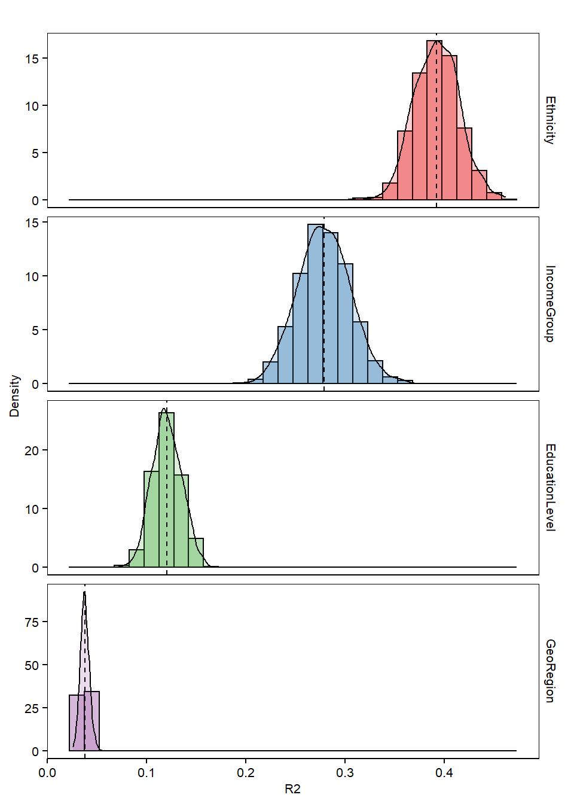

library("stringr")
library("dplyr")
library("reshape2")
library("ggplot2")dir.wrk <- str_replace(getwd(), "/scripts", "")
dir.output <- file.path(dir.wrk, "output")file.dat <- file.path(dir.output, "stats_anovatbl_permanova_permmute_results_withReplacement.tsv")dat <- read.delim(file.dat, header = TRUE, stringsAsFactors = FALSE)df <- subset(dat, dat$Category == "R2")
df$Category <- NULL
df <- subset(df, df$Feature %in% c("Ethnicity", "IncomeGroup", "EducationLevel",
"GeoRegion"))
# RESHAPE DATA ---
dm <- reshape2::melt(df, id.var = "Feature", value.name = "R2")
dm$Feature <- factor(dm$Feature, levels = c("Ethnicity", "IncomeGroup", "EducationLevel",
"GeoRegion"))summary_r2 <- dm %>% dplyr::group_by(Feature) %>% dplyr::summarise(mean = mean(R2))# COLOR ---
cpalette <- c("#e41a1c","#377eb8","#4daf4a","#984ea3")
# PLOT ---
p <- ggplot(dm, aes(x=R2)) +
geom_histogram(aes(fill=Feature, y=..density..), position="identity", color="#000000", alpha=0.4) +
geom_density(aes(fill=Feature), alpha=0.2) +
scale_fill_manual(values=cpalette) +
geom_vline(data=summary_r2, aes(xintercept=mean), linetype="dashed", size=0.5, colour="#000000") +
facet_wrap(~Feature, ncol=1, scales="free_y", strip.position="right") +
theme(
axis.text.x = element_text(size = 8, color="#000000"),
axis.text.y = element_text(size = 8, color="#000000"),
axis.title = element_text(size = 8, color="#000000"),
plot.title = element_text(size = 10, color="#000000", hjust=0.5),
panel.grid.major = element_blank(),
panel.grid.minor = element_blank(),
axis.ticks = element_line(size=0.4, color="#000000"),
strip.text = element_text(size=8, color="#000000"),
strip.background = element_rect(fill="#FFFFFF", color="#FFFFFF"),
panel.background = element_rect(fill="#FFFFFF", color="#000000"),
legend.text = element_text(size = 10, color="#000000"),
legend.title = element_blank(),
legend.key.size = unit(0.5, "cm"),
legend.position = "none") +
ylab("Density") +
xlab("R2") +
ggtitle("")
p## `stat_bin()` using `bins = 30`. Pick better value with `binwidth`.